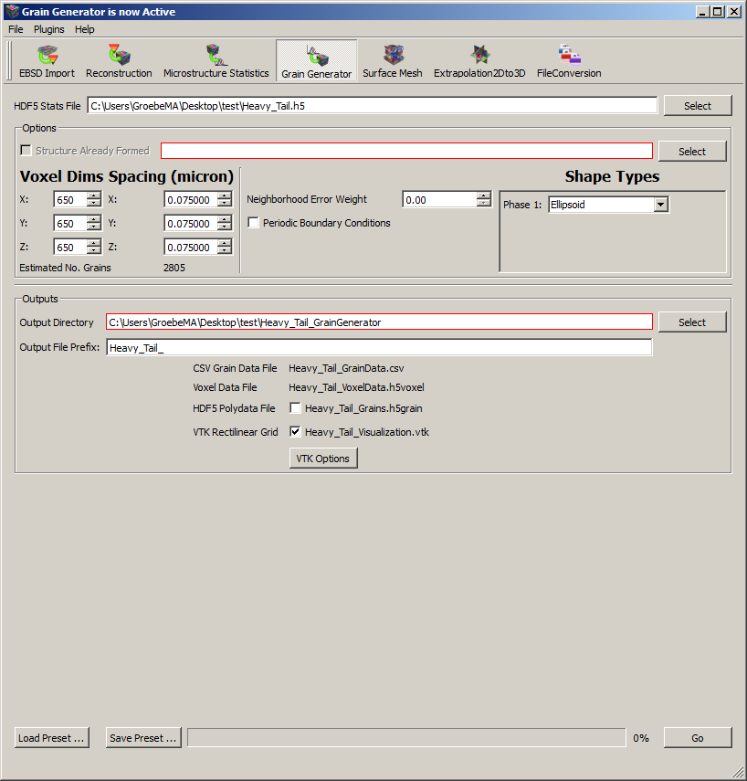

Synthetic Builder

- HDF5 Stats File - name and location of the input stats file that can be generated from the reconstruction or the stats generator utility package.
-
Options -
- Structure Already Formed - If a volume has already been created, this option will read
the .vtk file with grain ids. It enters the synthetic builder right before the orientation assignment and matching, so
it does not readd any orientation information, just the structural information. This file must be accompanied by a HDF5
stats file that contains the ODF and MDF that will be matched after reading the previously formed structure.
- X, Y, Z Dimensions - this is the desired number of voxels in the three dimensions of the box.
- X, Y, Z Spacing - this is the resolution of the voxels in the generated volume.
The user should be aware of the size distribution when selecting this value if they want to capture the morphology of the grains.
Typically, a resolution that results in ~10 voxels across the diameter of the average grain is a good value to select.
- Estimated number of grains - this is an estimated number of grains that will be in the resultant volume.
This estimate is calculated real-time by sampling the sizedistribution until the total volume equals the current box size set by the user.
- Shape Types - this is the type of object(s) being placed during grain placement. The
user can choose ellipsoids, superellipsoids or truncated octahedra. Ellipsoids do not need the omega3 value, but the
other two options require omega3 to be defined. Different phases can use different shape types, but currently only one shape type
can be used per phase.
- Periodic Boundaries - this option allows the user to specify whether the grains being
packed can 'wrap' from one side of the volume to the opposite size. This option should be turned on if the volume is
being imported into a program that requires periodic boundary conditions (i.e. some Finite Element simulations). Turning
this option off will make the volume look more like a volume cut out of a 'real' microstructure.
- Neighborhood Error Weight - this is the weight to be applied to matching the local
neighborhoods during grain placement. This weight may be reduced from 1.0 if the local neighborhoods are not known well or
deemed not to be critical.
-
Output Directory - location where all the output files will be written
- a. The output file is a .vtk file of structured grid type.
- Output File Prefix - this option allows the user to define a prefix to place on the output data files (which have a fixed 'base' name). The full names of the files will update in real-time on the list of output files.
- Write Binary VTK Files This option allows the user to choose whether the output visualization files are in binary or ASCII format.
-
Optional Output Files these are all visualization files that can be created. The output files are .vtk files of structured grid type.
- GrainGenerator Visualization - this file contains (at each voxel) grain ids, phase ids and the number of neighboring voxels that have grain ids different from the reference voxel.
- GrainGenerator IPF Visualization - this file contains (at each voxel) grain ids and Inverse Pole Figure colors
- GrainGenerator Grains - this file contains each grain with properly defined voxels and their neighbor connectivities. This file is a binary HDF5 format of vtk poly data. Additionally, all the attributes listed in the other files are all contained in this one file.
- Load/Save Preset - this allows the user to save input setting or load previously saved input settings